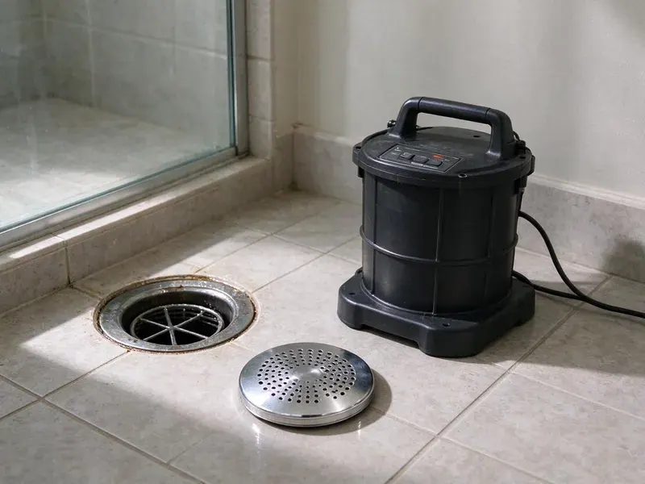

Drain Jetting in Elyria, OH
Drain jetting from HRL Plumbing in Elyria, OH cuts roots and strips scale with water, not chemicals.
- Grease and Scale Removal
- Up to 4,000 PSI Jetters
- Camera Check When Needed
- Seasoned Jetting Techs

Line Jetting in Elyria, OH
A slow kitchen drain only gets slower. Call HRL Plumbing before it backs up.
Water Jetting Services in Elyria, OH
HRL Plumbing handles slow and repeat-clogging drains in Elyria, OH with a jetter and, when needed, a camera. Older homes tend to have galvanized or cast iron branch lines that grab grease and hair on rough walls, and jetting smooths that out enough to keep things moving. Camera first on fragile pipe. We check before we push water.
Some of what we do:
- Compact jetters with small-diameter hose
- Fewer recurring service calls
- Grease, scale and root cutting

Additional Drain Services Services in Elyria, OH
From stubborn kitchen clogs to main sewer backups, our drain services in Elyria, OH restore full flow fast and keep it that way.


Customers
Why Choose HRL Plumbing for Drain Jetting in Elyria, OH?
Compact equipment for interior lines. Our small reels work right under the sink or at a wall cleanout, with no big hose dragged through the house. Drop cloths go down first.
- Buildup Removed, Clearing the coating reduces the chance of the next clog forming.
- Fewer Repeat Calls, A jetted line stays open longer than one that was only cabled.
- Pressure Set for Pipe, Trained techs set pressure for the material, so most pipe handles it fine.
Citywide Coverage
Every neighborhood in Elyria gets drain jetting from HRL Plumbing. Downtown commercial kitchens, older homes near the center and newer subdivisions all have drains that clog, just for different reasons. We see them all.
Experienced Team
Each tech at HRL Plumbing is trained to run jetting equipment safely. They adjust pressure for each pipe material before starting, not after. They work carefully.
Safety-First Approach
Jetting hose under pressure can hurt someone. Our techs wear eye protection and gloves, keep the nozzle in the pipe before turning on pressure and follow local plumbing code and industry practice. We take no shortcuts.
Trusted Certified Elyria Plumbing Services Professionals
At HRL Plumbing, we are proud to offer certified plumbing services throughout Elyria, OH. Credentials matter in this trade. Our plumbers hold recognized industry credentials, and they follow strict safety and quality rules on every repair, installation and maintenance call we run.
Call Us Now PHCC Plumbing Contractor Recognition
PHCC Plumbing Contractor Recognition Better Business Bureau (BBB) Accreditation
Better Business Bureau (BBB) Accreditation Angi Certified Pro
Angi Certified Pro ISO 9001 Quality Management Certification
ISO 9001 Quality Management CertificationDrain Jetting Jobs We Handle in Elyria, OH
Jetting Hard Water Scale in Elyria
Galvanized and cast iron drains collect mineral scale. That rough surface grabs hair, grease and soap every time water passes, so the clogs come back faster each year even if nobody changes their habits. We use a scale-cutting head. Before and after camera footage shows how much pipe wall is left.

Commercial Kitchen Drain Jetting in Elyria, OH
Prep sinks, dish lines and floor sinks all carry grease. Even with a properly sized interceptor, the branch lines inside the building build up fast, and a busy kitchen can go from fine to flooded floor sinks in a single weekend. We put it on a schedule. Work happens before opening or after close. Service records go in your file for the health inspector.
Jetting for Businesses in Elyria, OH
Offices, salons and shops have their own drain trouble. Hair in salons, paper and food in break rooms and grit from mop sinks all show up in commercial lines. Restroom lines need attention. We can come before you open or after you close.
Root Cutting With a Jetter in Elyria, OH
Roots get into a sewer through tiny gaps. Mature trees near older clay or cast iron laterals send fine root hairs into the joints, and those hairs grow into a mat that catches paper and solids until the line plugs completely. A spinning cutter shreds the mat. A camera pass shows which joint they came through and whether a repair will stop them for good.
Floor Drain and Utility Sink Jetting in Elyria, OH
Garage floor drains get forgotten. Mud, paint rinse, sawdust and sand from utility and mop sinks settle in the trap and the line beyond it until a heavy wash day sends water across the floor. We jet both. We also check the trap seal or primer to keep sewer gas out.
Maintenance Jetting Programs in Elyria, OH
Regular jetting costs less than repeat emergencies. For a property with a history of repeat clogs, root entry or hard water scale, we set a cleaning interval and put it on the calendar so the line never gets back to the point of backing up. Homes might go yearly. We keep records of each visit for your files.
Jetting Kitchen and Bath Lines at Home in Elyria
Grease in the kitchen, hair in the shower, scale in the tub drain. We set the jetter up at the nearest cleanout or remove the trap, feed small hose toward the main and adjust pressure for whatever pipe the house has. Old pipe gets a lighter touch. Cast iron and clay that collect sediment respond well to a slower pass with a rotating nozzle.

Storm Drain Jetting in Elyria
Yard drains and area drains clog with silt. Older cities with combined sewers can back up during big storms, so a backwater valve can safeguard a finished basement. Leaves, sand, roof grit and lawn clippings settle in the low spots of buried storm pipe until water starts pooling against the foundation after a heavy rain. A high-flow jetter moves that debris. We also look at where the downspouts tie in.
Local Drain Line Jetting in Elyria, OH
Local techs know local pipe. Around Elyria, we see a lot of aging clay laterals with root entry and older galvanized branches choked with scale, so the trucks carry the cutters and nozzles those jobs call for. Fewer return trips. You can book a visit by phone.
Searching for drain jetting near you in Elyria, OH? HRL Plumbing has techs with jetters on the trucks every day. Our trucks carry cables and jetters, so most clogs get handled on one same-day visit. Local crews save time.
HRL Plumbing at a Glance
- Licensed and insured plumbers serving Elyria, OH
- Same-day appointments and 24/7 emergency response
- Clear written estimates, no hidden fees
- 4.9-star rated by 673+ Ohio customers
Elyria Map
Elyria Information
- Population
- 53,117
- Area codes
- 440/567/216
- Service area
- Elyria and communities within 40 miles
- Nearby
- Lorain, Lakewood, Parma, Cleveland
Roots chase moisture into sewer joints, and moving ground cracks those joints further under Elyria, OH homes. Basements are standard in most homes, and many rely on sump pumps to move groundwater away during wet periods.
Talk to a Plumber
Reach out to HRL Plumbing for reliable plumbing work done by licensed pros in Elyria, OH.
Our Specialized Plumbing Services in Elyria, OH
At HRL Plumbing, we handle the full list of plumbing services across Elyria, OH. We go from leak detection all the way to full system installations, for homes and commercial buildings, and we do it quickly at a fair price. Here are the core services we offer:


Our Drain Jetting Routine in Elyria, OH
This is what to expect when HRL Plumbing jets a drain at your Elyria, OH home or business.
Call to Schedule
Call (740) 449-7505 and tell us which drains are slow. We book a visit that fits your day.
Look at the Line
The tech finds the cleanout and often runs a camera. We learn the pipe material and what is in it.
Jet the Pipe
The nozzle scours the pipe wall clean. We dial pressure to the material.
Frequently Asked Questions About Drain Jetting in Elyria
Jetting one interior branch line in Elyria usually costs $250 to $550. Commercial kitchen lines and multiple drains get quoted on site.
Not when pressure is set for the pipe size and material. We scope older or fragile lines before jetting.
Jetting with a root-cutting nozzle shreds root masses and flushes them out. That clears the line for now, but the roots came through a crack or joint and will grow back, so a camera look afterward is worth doing. Fixing the joint ends it.
Usually one to three hours. Main lines and heavy root jobs can take longer, especially if we need to run a camera before and after.
Repeat clogs soon after snaking, grease smells and gurgling sinks are the common signals.
No permit for jetting itself. Only repairs or changes to the plumbing need one.
No. We cover the area and contain any splash.
Most visits in Elyria, OH take one to three hours. Long main lines, heavy root growth and hard-to-reach cleanouts push that up, and a camera before and after adds a bit more.
Hear From Customers Who Hired Our Plumbing Experts

Robert G.
The camera showed a full break in our clay sewer line near the street. HRL Plumbing replaced it with a trenchless pipe burst, so the only digging was two small pits in the yard. They let us watch the footage before and after.
Sewer Line Replacement · Euclid, OHJames P.
Our restaurant had a slow leak at the hand sink that was rotting the cabinet base. HRL Plumbing came in at six in the morning before prep, replaced the trap and both supply lines, and was packed up before my first cook clocked in.
Commercial Plumbing · Euclid, OH
Carlos V.
Our house still had galvanized pipe, and upstairs the shower was a trickle. The crew repiped everything in PEX over three days and patched every drywall hole before they left. The pressure difference is night and day.
Repiping · Parma, OH
Emily R.
The shutoff valve under our kitchen sink snapped off in my hand on a Sunday morning. HRL Plumbing had someone out by early afternoon. He replaced both angle stops with quarter turn valves and showed me where our main shutoff was, which I honestly did not know.
Plumbing Repair · Parma, OHDaniel K.
A pipe burst in the garage ceiling at 11 at night. Someone answered on the second ring, and the plumber was in my driveway about fifty minutes later. He shut off the main, cut out the split section, and had water back on before 2 am.
Emergency Plumbing · Cleveland, OHMegan L.
Our upstairs tub drained so slowly that every shower turned into a bath. HRL Plumbing pulled a wad of hair out of the stopper and then snaked the line past the trap. Three months later it still drains fast.
Drain Cleaning · Cleveland, OH